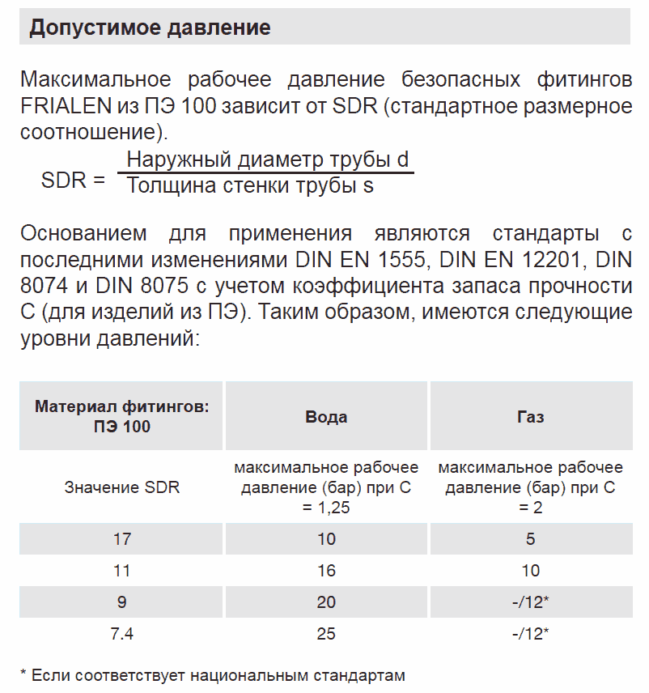
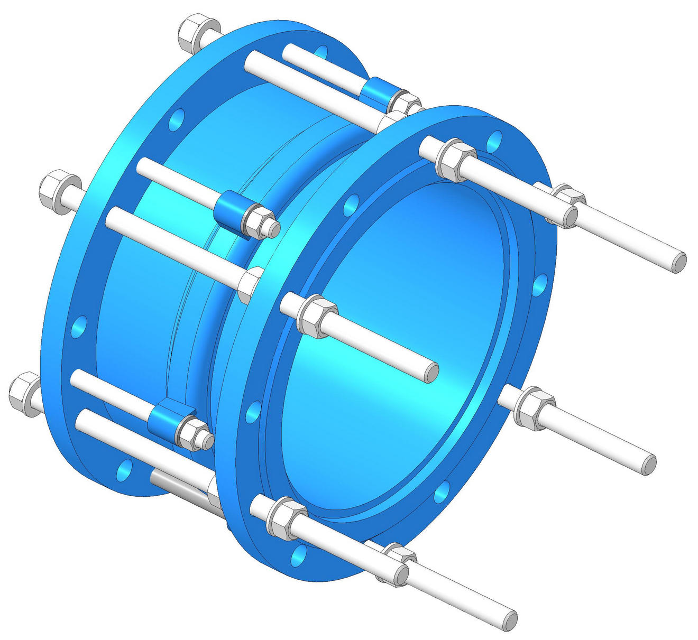
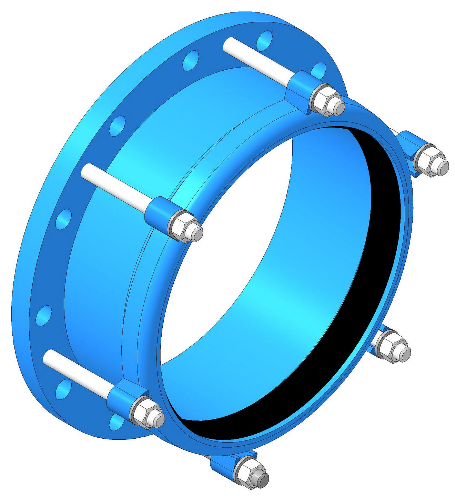
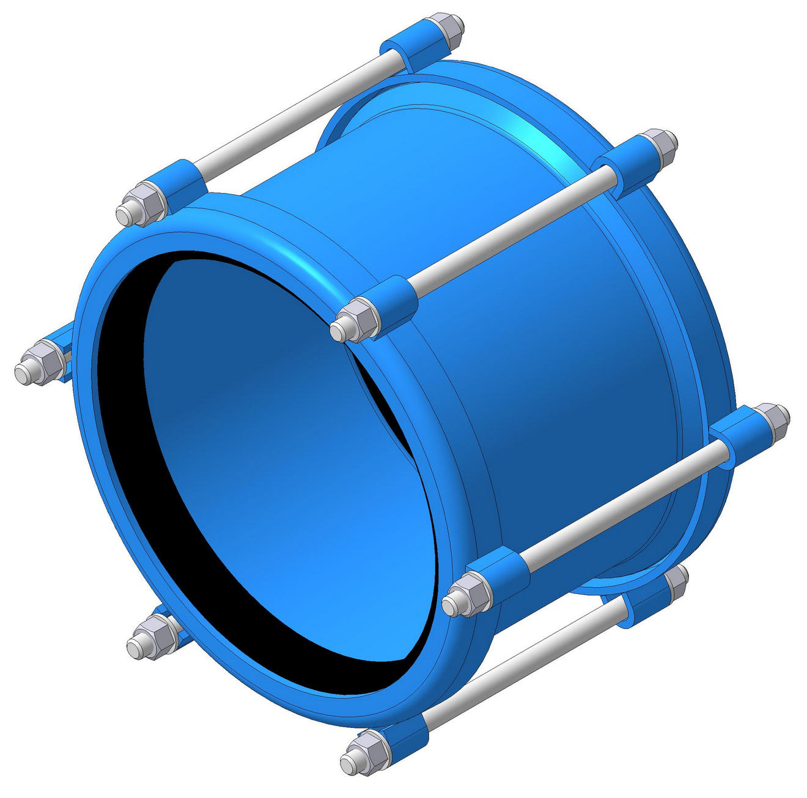

ГОСТ 18599-2001 устанавливает ТУ на трубы напорные ПНД. Стандарт распространяется на напорные трубы из полиэтилена низкого давления, предназначенные для трубопроводов, транспортирующих воду, в том числе для хозяйственно-питьевого водоснабжения, при температуре от 0°С до 40°С, а также другие жидкие и газообразные вещества.




Pol Banky © 2018